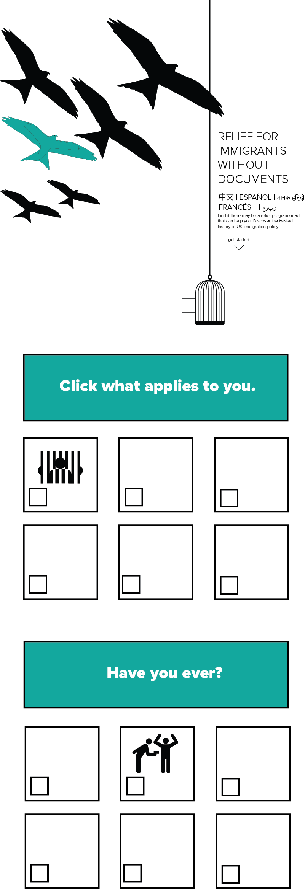

Pre-Production Draft
Immigration Acts
by Kevin Tsukii
-

Black and white version.

The idea behind this design was to imagine what if figuring which immigration relief program you qualified for were as easy as taking a Buzzfeed quiz...that told you if you were:

Persona 1: The detained, vulnerable immigrant. I imagine that he/she/they may not have access to a laptop/internet connection, but can at least hopefully borrow a smartphone with data from someone. I hope they stumble across the resource using Google or by word of mouth.

Persona 2: Someone who stubmles upon this via an internet search engine and is interested in learning more about how the immigration system functions.